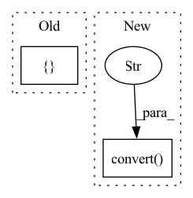

Pattern ID :12611
Before Change
image = image.resize((256, 256), resample=Image.BILINEAR)
label = torch.tensor(self.data.loc[idx, "diagnosis"])
return {
"image": self.transform(image),
"labels": label
}
def visualize_dataset(self, n_images=9):
Function to visualize blindness imagesAfter Change
fname = self.data.loc[idx, "id_code"]
img_name = os.path.join(
self.img_path, fname + ".png")
img = Image.open(img_name).convert("RGB" )
img = self.transform(img)
label = torch.tensor(self.data.loc[idx, "diagnosis"])
In pattern: SUPERPATTERN
Frequency: 3
Non-data size: 2
Instances Fragment ID: 42792716
Project Name: tuttelikz/farabio
Commit Name: e0a58252c8a8bc4f5662faffc1a30e088b8082c9
Time: 2021-07-29
Author: s.askaruly@gmail.com
File Name: farabio/data/biodatasets.py
M Class Name: RetinopathyDataset
N Class Name: RetinopathyDataset
M Method Name: __getitem__(2)
N Method Name: __getitem__(2)
M Parent Class: Dataset
N Parent Class: Dataset
M File Name: farabio/data/biodatasets.py
N File Name: farabio/data/biodatasets.py
M Start Line: 611
M End Line: 620
N Start Line: 626
N End Line: 634
Before Change
if not self._log or (batch_idx + 1) % self._log_every_n_steps != 0:
return
named_tensor: List = []
tensor, _gt, _ = batch // tensor, label, batch_size
if isinstance(outputs, Dict):
pred = outputs["pred"]
elif isinstance(outputs, Tensor):After Change
raise Exception(f"Except `outputs` to be List or Dict, get {type(outputs)}")
for idx, image in enumerate(tensor):
transformed_image = transforms.ToPILImage()(image).convert("RGB" ) // WxH dimension
compressed_batch["images"].append(transformed_image) // batch_size x W x H dimension
compressed_batch["ground_truths"].append(gt[idx].item())
compressed_batch["predictions"].append(pred[idx].item()) Fragment ID: 42792717
Project Name: uetailab/uetai
Commit Name: ac795b0b1d6529a8ef130965ee4028565aa6620e
Time: 2021-09-30
Author: manhdung20112000@gmail.com
File Name: src/uetai/callbacks/image_monitor.py
M Class Name: ImageMonitorBase
N Class Name: ImageMonitorBase
M Method Name: on_train_batch_end(7)
N Method Name: on_train_batch_end(7)
M Parent Class: Callback
N Parent Class: Callback
M File Name: src/uetai/callbacks/image_monitor.py
N File Name: src/uetai/callbacks/image_monitor.py
M Start Line: 48
M End Line: 68
N Start Line: 67
N End Line: 88
Before Change
image = Image.open(hr_image_path).convert("RGB")
image_width = (image.width // config.upscale_factor) * config.upscale_factor
image_height = (image.height // config.upscale_factor) * config.upscale_factor
image = image.resize([ image_width, image_heightAfter Change
print(f"Processing `{os.path.abspath(hr_image_path)}`...")
// Make low-resolution images.
lr_image = Image.open(lr_image_path).convert("RGB" )
hr_image = Image.open(hr_image_path).convert("RGB")
bic_image = lr_image.resize([hr_image.width, hr_image.height], Image.BICUBIC)
// Extract Y channel lr image data. Fragment ID: 42792718
Project Name: lornatang/fsrcnn-pytorch
Commit Name: a022c5870d1411233e0c2b2cfe940a4074f70c87
Time: 2021-11-10
Author: liuchangyu1111@gmail.com
File Name: validate.py
M Class Name: AnonimousClass
N Class Name: AnonimousClass
M Method Name: main(0)
N Method Name: main(0)
M Parent Class:
N Parent Class:
M File Name: validate.py
N File Name: validate.py
M Start Line: 63
M End Line: 84
N Start Line: 53
N End Line: 96